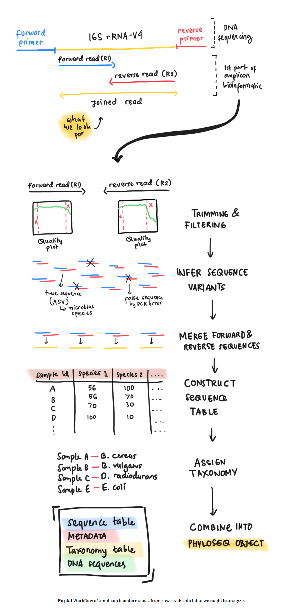
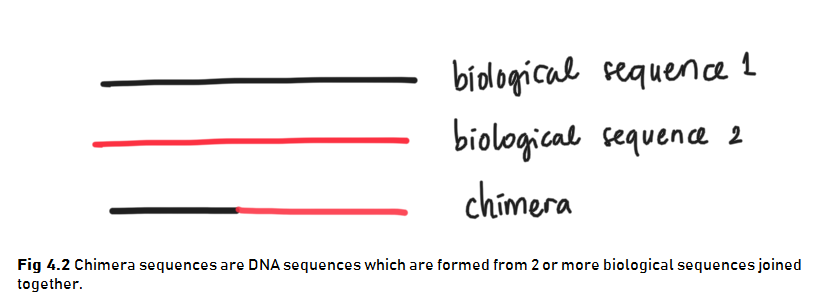

Chapter 4 Amplicon Bioinformatics
This section demonstrates the first step of performing microbiome analysis in R. Amplicon bioinformatics include construction of the raw reads from sequencing result into the table we ought to analyze. Below is an illustration of what we are going to do in amplicon bioinformatics (Fig 4.1).

4.1 Libraries
First, we should load the necessary packages. You might also want to install some packages if you haven’t installed them to your machine.
# CRAN libraries
library(knitr) # for reporting
library(ggplot2) # for graph visualization
library(gridExtra) # additional mapping for ggplot2
library(tidyverse) # for general data cleaning/manipulation
# Bioconductor libraries
library(dada2)
library(phyloseq)
library(Biostrings)We will be using a lot of functions from DADA2 package for amplicon analysis and therefore I will be following DADA2 Pipeline Tutorial (1.12) Callahan (n.d.). Through out the tutorial, I will try to explain each step in hopefully a more friendly manner for people who are new to this analysis.
4.2 Dataset
The dataset for microbiome analysis is usually a set of raw reads of DNA sequences a.k.a. amplicons stored in a digital format as a result of DNA sequencing method performed in labs. The DNA of a microbial species needs to be sequenced first to retrieve its information and store it in a digitalized form. There are various tools for DNA sequencing with the Next Generation Sequencing (NGS) technology being commonly used today. It allows rapid sequencing for a massive load of DNA sequences simultaneously.
You are free to use your own amplicons dataset while following the tutorial provided in this book. But please do notice that the data should met certain criteria as follows:
- Samples have been demultiplexed, i.e. each samples have their own DNA sequence (
.fastqfile). - Non-biological sequences have been removed, i.e. the samples are free of primers and other artificial sequences from lab work processes.
- If paired-end sequencing data, the forward and reverse .fastq files contain reads in matched order.
Meanwhile, if you don’t have one, you can use the mothur MiSeq SOP data provided free in here. The data is also used on the original tutorial.
The data consisted of amplicons from the V4 region of the 16S rRNA gene sequenced through Illumina Miseq NGS technology. The V4 region stands for the more specific region of the 16S rRNA gene. The data contains DNA from microbial communities collected from gut samples of a mouse during post weaning growth (after milk diet).
The original experiment were done with the aim to understand the effect of normal gut microbiome to the mouse health. The full data is extremely large to process for this introductionary phase (3.9 GB) and therefore we will be using only parts of the data. With the available data we have, let’s try to understand the effect of the first 10 days of post weaning (eating) period to the stability of gut microbiome in the 140-150 day of post weaning period.
These are the steps for reading the data:
- The data can be downloaded in the link provided above. The data will be in
.zipformat. - You will need to extract it to obtain the amplicons in
.fastqformat and some additional files.
There will be 45 files consisted of:
- 19 forward reads of community DNA samples
- 19 reverse reads of community DNA samples
- 1 forward reads of control (mock) samples
- 1 reverse reads of control (mock) samples
- 1 HMP_mock.v35 fasta (annotated (named) DNA from mock samples)
- 5 additional information files:
- mouse.dwp.metadata
- mouse.time.design
- stability.batch
- stability files
For those of you who are interested in understanding more about the sample it is a good idea to read the original research publication and perhaps also articles about designing an experiment including its control.
The DNA samples or amplicons are stored with a standard naming system:
F3D0stands for the mouse idF3and the day of samplingD0- the
R1andR2stands for forward and reverse reads respectively.
Forward and reverse reads came from the sequencing method which sequenced DNA in two direction just as illustrated in Fig 4.1. Here is a great video about DNA sequencing for more detailed process.
Before further analysis, forward and reverse reads of DNA need to be “cleaned” first for its low quality reads and then joined to obtain the full DNA. The data cleaning process is called Trimming and Filtering which we will discuss in the next section. Below, the amplicons will be tagged for data cleaning process.
The amplicons may still be in its compressed format (.fastq.gz) but the one we have are not. For those of you who have the compressed format, luckily most bioinformatics tools have the ability to process even the compressed files. This is quite a convenience as most microbiome analysis deals with large-sized data and compressed files are, well, more “compressed”.
The code below will try to list all the amplicons stored in our working directory and separate them between the reverse or forward reads for the data cleaning process.
# list amplicons into forward/reverse reads
amplicons_F <- sort(list.files(path = "data/MiSeq_SOP", # location of your amplicons
pattern = "R1", # forward reads
full.names = TRUE))
amplicons_R <- sort(list.files(path = "data/MiSeq_SOP",
pattern = "R2", # reverse reads
full.names = TRUE))## [1] "data/MiSeq_SOP/F3D0_S188_L001_R1_001.fastq"
## [2] "data/MiSeq_SOP/F3D1_S189_L001_R1_001.fastq"
## [3] "data/MiSeq_SOP/F3D141_S207_L001_R1_001.fastq"
## [4] "data/MiSeq_SOP/F3D142_S208_L001_R1_001.fastq"
## [5] "data/MiSeq_SOP/F3D143_S209_L001_R1_001.fastq"
## [6] "data/MiSeq_SOP/F3D144_S210_L001_R1_001.fastq"## [1] "data/MiSeq_SOP/F3D0_S188_L001_R2_001.fastq"
## [2] "data/MiSeq_SOP/F3D1_S189_L001_R2_001.fastq"
## [3] "data/MiSeq_SOP/F3D141_S207_L001_R2_001.fastq"
## [4] "data/MiSeq_SOP/F3D142_S208_L001_R2_001.fastq"
## [5] "data/MiSeq_SOP/F3D143_S209_L001_R2_001.fastq"
## [6] "data/MiSeq_SOP/F3D144_S210_L001_R2_001.fastq"# extract sample names
sample_names <- basename(amplicons_F) %>% # get file names
word(start = 1L, sep = "_") # get the first word as the sample names## [1] "F3D0" "F3D1" "F3D141" "F3D142" "F3D143" "F3D144"4.3 Trimming & Filtering
After we have separate the sequences into reverse/forward, we need to perform data cleaning by trimming & filtering. Raw reads are often have regions with low-quality reads. Most Illumina sequencing data shows a trend of decreasing average quality towards the end of sequencing reads (Ben J. Callahan 2016).
To know which regions have low quality reads, we can plot it using plotQualityProfile() from DADA2 package. This function plots a visual summary of the distribution of quality scores for each sequence position. For more clarity, one amplicon files consist of numerous DNA sequences from each microbial present in one community sample. Each sequences calculated for its quality score in each sequence position (first to last). The plot will generate the summary of quality score from all the DNA sequences in one sample.
Let’s take the first 3 observation and plot its reverse and forward reads for its quality profile. From there we can determine which position with low quality reads and trim them later.
# plotting 1st observation
f_plot <- plotQualityProfile(amplicons_F[1:3]) + labs(x = "Sequence Position")
r_plot <- plotQualityProfile(amplicons_R[1:3]) + labs(x = "Sequence Position")
grid.arrange(f_plot,r_plot,ncol = 1)
The distribution of quality scores at each sequence position is shown as a grey-scale heatmap. The darker color represent higher frequency of each quality score at each sequence position. Notice that I’ve intentionally changed the x label for easier interpretation. It also shown the quality score summary:
- green line: mean quality score
- orange line-solid: median quality score
- orange line-dashed: 25th and 75th quantiles
- Reads: number of reads (DNA sequences present in a sample)
- red line: scaled proportion of reads that extend to at least that position (this is more useful for other sequencing technologies, as Illumina reads are typically all the same length, hence resulting a flat red line).
The forward reads are in good quality, but it is still better to trim a few of the first/last position of a sequence to avoid errors that can arise there. In this example, we will trim the first 10 positions because based on empirical observations across many Illumina datasets, the first or last 10 positions are particularly likely to contain pathological errors (Ben J. Callahan 2016). Meanwhile, the reverse reads are more worse in quality, especially at the end. From the plot result, we will trim the last 160 positions from the reverse reads.
After determining the trimming position for each forward & reverse reads, we will combine it with the standard filtering parameters maxEE = 2 (the maximum number of expected errors allowed in a read is 2)(Ben J. Callahan 2016). Trimming and filtering is performed on paired reads jointly, i.e. both reads must pass the filter for the pair to pass.
In the code below, we first create a file path for our filtered reads in the working directory and then perform the trimming and filtering.
# creating directory for filtered reads
if(!file_test("-d", "data/filtered")) #"if there is no directory `data/filtered`,
dir.create("data/filtered") # "create one"
# creating file path
# "data/filtered/sample_names_*_filtered.fastq.gz"
filtered_F <- file.path("data", "filtered", paste0(sample_names,"_F_filtered.fastq.gz"))
filtered_R <- file.path("data", "filtered", paste0(sample_names,"_R_filtered.fastq.gz"))## [1] "data/filtered/F3D0_F_filtered.fastq.gz"
## [2] "data/filtered/F3D1_F_filtered.fastq.gz"
## [3] "data/filtered/F3D141_F_filtered.fastq.gz"# trimming & filtering
tnf_summary <- filterAndTrim(amplicons_F, filtered_F, # input and output
amplicons_R, filtered_R,
# trimming
trimLeft=10, # trim the first n observation from each reads
truncLen=c(240,160), # truncate reads after this position; c(Forward/Reverse)
# filtering standard
maxN=0, maxEE=c(2,2), # max expected error (maxEE) = 2
truncQ=2, rm.phix=TRUE,
# additional setting
compress=TRUE, # whether outputs should be compressed
multithread=FALSE) # default for Windows, Mac can use `multithread=TRUE`## reads.in reads.out
## F3D0_S188_L001_R1_001.fastq 7793 7139
## F3D1_S189_L001_R1_001.fastq 5869 5314
## F3D141_S207_L001_R1_001.fastq 5958 5478
## F3D142_S208_L001_R1_001.fastq 3183 2926
## F3D143_S209_L001_R1_001.fastq 3178 2955
## F3D144_S210_L001_R1_001.fastq 4827 4323
## F3D145_S211_L001_R1_001.fastq 7377 6762
## F3D146_S212_L001_R1_001.fastq 5021 4580
## F3D147_S213_L001_R1_001.fastq 17070 15695
## F3D148_S214_L001_R1_001.fastq 12405 11448
## F3D149_S215_L001_R1_001.fastq 13083 12064
## F3D150_S216_L001_R1_001.fastq 5509 5054
## F3D2_S190_L001_R1_001.fastq 19620 18130
## F3D3_S191_L001_R1_001.fastq 6758 6275
## F3D5_S193_L001_R1_001.fastq 4448 4068
## F3D6_S194_L001_R1_001.fastq 7989 7394
## F3D7_S195_L001_R1_001.fastq 5129 4772
## F3D8_S196_L001_R1_001.fastq 5294 4890
## F3D9_S197_L001_R1_001.fastq 7070 6525
## Mock_S280_L001_R1_001.fastq 4779 4333Wait for a while as your machine processing your request to trim and filter the amplicons. When it is done, the resulting amplicons will be located in the filtered_path you have stated earlier. You can track the number of in-and-out filtered reads for each sample in tnf_summary.
4.4 Infer Sequence Variants
After filtering, typical workflow will continue to perform clustering of the DNA sequences into Operational Taxonomic Units (OTUs) or the estimated distinct species present in the community. This is performed by creating groups of sequencing reads that differ by less than a fixed dissimilarity threshhold. Even so, there is still a possibility of sequencing errors generating artificial sequences. To tackle this problem, a high-throughput DADA2 method was developed. This method can infer amplicon sequence variants (ASVs) from our amplicons data. ASVs are individual DNA sequences recovered after the removal of false sequences generated from error during PCR amplification and sequencing. ASVs are considered as the true biological sequences and therefore will be used for further analysis.
DADA2 works by making use of a parametric error model err to distinguish between true biological sequences (ASVs) and those generated by error Ben J. Callahan (2016). This error model learns the maximum possible error rates of our amplicons data using the learnErrors() function (Callahan, n.d.). The error model will later be used in the DADA2 algorithm using dada() function.
# error model for forward reads
error_F <- learnErrors(filtered_F) #input: file path for filtered reads# infer sequence variants
dada_F <- dada(filtered_F, err = error_F, verbose = FALSE)
dada_R <- dada(filtered_R, err = error_R, verbose = FALSE)Let’s check dada2 result from the first sample forward reads. Dada infer 130 true amplicon sequence variants from 1866 unique sequences.
## $F3D0_F_filtered.fastq.gz
## dada-class: object describing DADA2 denoising results
## 130 sequence variants were inferred from 1866 input unique sequences.
## Key parameters: OMEGA_A = 1e-40, OMEGA_C = 1e-40, BAND_SIZE = 164.5 Merging Forward & Reverse DNA Sequences
The DADA2 algorithm removed (nearly) all substitution errors from the data and the data are now ready to be merged.
4.6 Construct Sequence Table & Remove Chimeras
Using the merged pairs of the amplicon data, a sequence table or in this case an amplicon sequence variant (ASV) table can be generated. This table is in matrix format with rows stores the sample names and the columns stores the number of each ASVs. From this table we can inspect the number of ASVs (representing each microbial species) in each sample. ASV table is a higher-resolution version of the OTU table produced by tradisional method.
We can construct a sequence table using makeSequenceTable().
Below is a glimpse of what our seqtab matrix looks like:
## GCGAGCGTTATCCGGATTTATTGGGTTTAAAGGGTGCGCAGGCGGAAGATCAAGTCAGCGGTAAAATTGAGAGGCTCAACCTCTTCGAGCCGTTGAAACTGGTTTTCTTGAGTGAGCGAGAAGTATGCGGAATGCGTGGTGTAGCGGTGAAATGCATAGATATCACGCAGAACTCCGATTGCGAAGGCAGCATACCGGCGCTCAACTGACGCTCATGCACGAAAGTGTGGGT
## F3D0 582
## F3D1 417
## F3D141 442
## GCGAGCGTTATCCGGATTTATTGGGTTTAAAGGGTGCGCAGGCGGACTCTCAAGTCAGCGGTCAAATCGCGGGGCTCAACCCCGTTCCGCCGTTGAAACTGGGAGCCTTGAGTGCGCGAGAAGTAGGCGGAATGCGTGGTGTAGCGGTGAAATGCATAGATATCACGCAGAACTCCGATTGCGAAGGCAGCCTACCGGCGCGCAACTGACGCTCATGCACGAAAGCGTGGGT
## F3D0 345
## F3D1 354
## F3D141 363
## GCGAGCGTTATCCGGATTTATTGGGTTTAAAGGGTGCGTAGGCGGGCTGTTAAGTCAGCGGTCAAATGTCGGGGCTCAACCCCGGCCTGCCGTTGAAACTGGCGGCCTCGAGTGGGCGAGAAGTATGCGGAATGCGTGGTGTAGCGGTGAAATGCATAGATATCACGCAGAACTCCGATTGCGAAGGCAGCATACCGGCGCCCGACTGACGCTGAGGCACGAAAGCGTGGGT
## F3D0 451
## F3D1 232
## F3D141 347We have three ASVs (sequences) and its number on each of our first three samples. For more tidy visualization, we can change the simplify the sample names:
## [1] 20 286We have a total of maximum 286 ASVs or expected microbial species that may present in a community sample.
The last data cleaning step that we can do is to remove chimeras. Chimeras are DNA sequences which are formed from 2 or more biological sequences joined together (Fig 4.2). These chimeras can act as distinct microbial species alone when in fact it is not a true microbial sequences.

Chimeras can be identified if they can be exactly reconstructed by combining a left-segment and a right-segment from two more abundant “parent” or biological sequences. We can remove chimeras using function removeBimeraDenovo().
## [1] 20 234Removing chimeras leave us with 234 ASVs from the original 286 ASVs we previously have. Even so, if you calculate the percentage of chimeric sequences from the total abundance of all sequences, it only accounts for 4% of the data. This amount is small and acceptable. On the other hand, if your analysis indicates a lot of chimeric sequences there might be some upstream processes that have gone wrong such as not removing the primer sequences from the fasta prior to reading the data Callahan (n.d.).
You can track the number of reads or sequences that made it through each step of the processes.
# create function to get the sum of unique DNA
getN <- function(x) {
sum(getUniques(x))
}
# generate the summary
track_reads <- data.frame(row.names = sample_names,
raw_reads = tnf_summary[,1],
filtered = tnf_summary[,2],
ASVs_F = sapply(dada_F, getN), # sapply to apply the function to all rows (sample)
ASVs_R = sapply(dada_F, getN),
joined = sapply(merged, getN),
no_chimera = rowSums(seqtab_nochim)) # form row-column sums## raw_reads filtered ASVs_F ASVs_R joined no_chimera
## F3D0 7793 7139 7021 7021 6667 6655
## F3D1 5869 5314 5252 5252 5028 5028
## F3D141 5958 5478 5369 5369 4995 4867
## F3D142 3183 2926 2822 2822 2611 2546
## F3D143 3178 2955 2837 2837 2598 2564
## F3D144 4827 4323 4175 4175 3690 3540
## F3D145 7377 6762 6622 6622 6150 5873
## F3D146 5021 4580 4456 4456 4003 3901
## F3D147 17070 15695 15505 15505 14080 12980
## F3D148 12405 11448 11283 11283 10567 10027
## F3D149 13083 12064 11917 11917 11166 10705
## F3D150 5509 5054 4897 4897 4392 4306
## F3D2 19620 18130 17977 17977 17520 16952
## F3D3 6758 6275 6179 6179 5911 5611
## F3D5 4448 4068 3932 3932 3723 3723
## F3D6 7989 7394 7268 7268 6904 6716
## F3D7 5129 4772 4657 4657 4435 4222
## F3D8 5294 4890 4806 4806 4583 4553
## F3D9 7070 6525 6397 6397 6154 6075
## Mock 4779 4333 4309 4309 4292 4292From the summary, we know that there is no over-large drop associated with any single step and we manage to keep majority of our data. Now we can move to the next step.
4.7 Assign Taxonomy
Previous amplicon bioinformatics processes provide us with a sequence table containing the number of distinct amplicons (ASVs) which resembles a microbial species in each of our sample. This table will be more informative and easier to analyze when we have assign the taxonomy or identity for each ASVs in the table. That is like giving an identity to the considerably long ACGT-code in the into something more “readable” for the column names.
Assigning taxonomy is a process of classifiying an unknown ASVs into a known microbial species. Using DADA2 package, it involves a native implementation of the naive Bayesian classifier method. The function assignTaxonomy() will take an input of a set of sequences to be classified (ASVs) a nd a training set of reference sequences with known taxonomy. The function will output taxonomic assinments for all ASVs with at least minBoot bootstrap confidence (parameter for the algorithm). Do it looks like a machine learning classification case? Yes, it is.
There are various resources for training set fastas, but I will use the Silva reference database (McLaren 2020) for this example. To use it, go to this link and download these files:
- silva_nr_v138_train_set.fa.gz
- silva_species_assignment_v138.fa.gz
and then place the files inside the same directory with our filtered sequences .fastq.gz files. We can then perform taxonomy assignment:
# assign taxa until genus level
taxa <- assignTaxonomy(seqtab_nochim, # sequence table
refFasta = "data/filtered/silva_nr_v138_train_set.fa.gz", # reference sequence
minBoot = 50) # minimal bootstrap confidence; default to 50
# add taxa until species level
# note that it may result NA if there is no exact match in the reference
taxa <- addSpecies(taxa, # result from assignTaxonomy
refFasta = "data/filtered/silva_species_assignment_v138.fa.gz")# check taxonomic assignment
taxa_print <- taxa
rownames(taxa_print) <- NULL # for visualization purpose## Kingdom Phylum Class Order Family
## [1,] "Bacteria" "Bacteroidota" "Bacteroidia" "Bacteroidales" "Muribaculaceae"
## [2,] "Bacteria" "Bacteroidota" "Bacteroidia" "Bacteroidales" "Muribaculaceae"
## [3,] "Bacteria" "Bacteroidota" "Bacteroidia" "Bacteroidales" "Muribaculaceae"
## [4,] "Bacteria" "Bacteroidota" "Bacteroidia" "Bacteroidales" "Muribaculaceae"
## [5,] "Bacteria" "Bacteroidota" "Bacteroidia" "Bacteroidales" "Bacteroidaceae"
## [6,] "Bacteria" "Bacteroidota" "Bacteroidia" "Bacteroidales" "Muribaculaceae"
## Genus Species
## [1,] NA NA
## [2,] NA NA
## [3,] NA NA
## [4,] NA NA
## [5,] "Bacteroides" NA
## [6,] NA NAFor those of you who were more exposed to the manual approach of assigning taxonomy (using clustering)–like me in my university years, you must be quite confused with this new classification approach. In the manual approach, for each unknown species, we perform clustering of unknown DNA with the reference database and perform taxonomy assignment based on the highest DNA sequence similarity. DADA2 approach is rather different. But using this new algorithm to perform massive taxonomy assignments on numerous unknown species simultaneously is considered a common approach now. Personally, I captured this as a solid movement towards the rising of Big Data era in Biology, just like the data we use in this book.
In this point, youu can additionally check the accuracy of DADA2 algorithm in inferring sequence variants by comparing the result of mock samples to the annotated sequence of mock samples HMP_mock.v35 fasta. I’ll leave it for you to explore the original documentation here.
4.8 Combine Data into Phyloseq Object
After many process of amplicon bioinformatics, the last thing we can do is to combine all the processed data into a phyloseq object. A phyloseq object will be in a .csv format which will be easier for us to manipulate for microbiome analysis. We can create a phylosec object by combining several metadata and the result of our DADA2 process.
We will use the sample names which stores the information. Keep in mind that we have to pay attention to where is the mock sample is located for it has different naming system and therefore needs special treatments.
## [1] "F3D0" "F3D1" "F3D141" "F3D142" "F3D143" "F3D144" "F3D145" "F3D146"
## [9] "F3D147" "F3D148" "F3D149" "F3D150" "F3D2" "F3D3" "F3D5" "F3D6"
## [17] "F3D7" "F3D8" "F3D9" "Mock"Below we will extract the information one by one:
## [1] "F" "F" "F" "F" "F" "F" "F" "F" "F" "F" "F" "F" "F" "F" "F" "F" "F" "F" "F"
## [20] "M"## [1] "3" "3" "3" "3" "3" "3" "3" "3" "3" "3" "3" "3" "3" "3" "3" "3" "3" "3" "3"
## [20] "o"day <- sapply(strsplit(sample_names, "D"), `[`, 2) %>% # separate by 'D'; get the 2nd value [2]
as.integer() # convert to integer
day## [1] 0 1 141 142 143 144 145 146 147 148 149 150 2 3 5 6 7 8 9
## [20] NA# combine metadata
seq_data <- data.frame(Subject = subject,
Gender = gender,
Day = day,
When = ifelse(day < 100, "Early", "Late"), # add early/late sampling period
row.names = sample_names)
head(seq_data)## Subject Gender Day When
## F3D0 3 F 0 Early
## F3D1 3 F 1 Early
## F3D141 3 F 141 Late
## F3D142 3 F 142 Late
## F3D143 3 F 143 Late
## F3D144 3 F 144 LateNow let’s create a phylosec object:
# create phylosec object
ps <- phyloseq(otu_table(seqtab_nochim, taxa_are_rows=FALSE),
sample_data(seq_data),
tax_table(taxa))
# remove mock sample
ps <- prune_samples(sample_names(ps) != "Mock", ps)## phyloseq-class experiment-level object
## otu_table() OTU Table: [ 234 taxa and 19 samples ]
## sample_data() Sample Data: [ 19 samples by 4 sample variables ]
## tax_table() Taxonomy Table: [ 234 taxa by 7 taxonomic ranks ]
## refseq() DNAStringSet: [ 234 reference sequences ]It is also better to merge the sequences of our ASVs in the phyloseq object. We will use function from Biostrings package to extract sequences from ASV table. The sequences are stored as taxa names in ASVs table (labelled as OTU table).
# get sequences
dna <- Biostrings::DNAStringSet(taxa_names(ps))
names(dna) <- taxa_names(ps) # connect dna data to taxa names## A DNAStringSet instance of length 234
## width seq names
## [1] 232 GCGAGCGTTATCCGGATTTATT...GCTCATGCACGAAAGTGTGGGT GCGAGCGTTATCCGGAT...
## [2] 232 GCGAGCGTTATCCGGATTTATT...GCTCATGCACGAAAGCGTGGGT GCGAGCGTTATCCGGAT...
## [3] 232 GCGAGCGTTATCCGGATTTATT...GCTGAGGCACGAAAGCGTGGGT GCGAGCGTTATCCGGAT...
## [4] 232 GCGAGCGTTATCCGGATTTATT...GCTGAGGCACGAAAGTGCGGGG GCGAGCGTTATCCGGAT...
## [5] 233 CCGAGCGTTATCCGGATTTATT...ACTGATGCTCGAAAGTGTGGGT CCGAGCGTTATCCGGAT...
## ... ... ...
## [230] 233 GCAAGCGTTATCCGGAATGACT...ACTGAGGCACGAAAGCGTGGGG GCAAGCGTTATCCGGAA...
## [231] 233 GCGAGCGTTATCCGGATTTATT...GTTGAGGCACGAAAGTGTGGGG GCGAGCGTTATCCGGAT...
## [232] 232 GCGAGCGTTATCCGGATTCATT...GCTGAGGCGCGAAAGCTGGGGG GCGAGCGTTATCCGGAT...
## [233] 232 GCGAGCGTTATCCGGATTCATT...GCTGAGGCGCGAAAGCTAGGGG GCGAGCGTTATCCGGAT...
## [234] 232 GCGAGCGTTATCCGGATTTATT...GCTGAGGCACGAAAGCGTGGGG GCGAGCGTTATCCGGAT...# merge data
ps <- merge_phyloseq(ps, dna)
# change taxa names into shorter id (ASVn)
taxa_names(ps) <- paste0("ASV", seq(ntaxa(ps)))Now, we can easily retrieve DNA sequences for each ASVs using taxa names as key id.
## OTU Table: [3 taxa and 19 samples]
## taxa are columns
## ASV1 ASV2 ASV3
## F3D0 582 345 451
## F3D1 417 354 232
## F3D141 442 363 347
## F3D142 290 305 159
## F3D143 231 176 204
## F3D144 424 277 304
## F3D145 647 494 523
## F3D146 326 231 254
## F3D147 1499 1220 913
## F3D148 870 732 580
## F3D149 887 781 725
## F3D150 318 232 402
## F3D2 3509 1594 1179
## F3D3 998 606 469
## F3D5 322 265 284
## F3D6 1017 675 590
## F3D7 649 504 439
## F3D8 277 356 352
## F3D9 512 426 485## A DNAStringSet instance of length 3
## width seq names
## [1] 232 GCGAGCGTTATCCGGATTTATTG...CGCTCATGCACGAAAGTGTGGGT ASV1
## [2] 232 GCGAGCGTTATCCGGATTTATTG...CGCTCATGCACGAAAGCGTGGGT ASV2
## [3] 232 GCGAGCGTTATCCGGATTTATTG...CGCTGAGGCACGAAAGCGTGGGT ASV3We finally have our final phyloseq object containing ASVs table, our sample metadata, taxonomy table for our ASVs, and its DNA sequences.
## phyloseq-class experiment-level object
## otu_table() OTU Table: [ 234 taxa and 19 samples ]
## sample_data() Sample Data: [ 19 samples by 4 sample variables ]
## tax_table() Taxonomy Table: [ 234 taxa by 7 taxonomic ranks ]
## refseq() DNAStringSet: [ 234 reference sequences ]After creating the phylosec object, we are ready to dive deeper into microbiome analysis in the next chapter!
Ben J. Callahan, Julia A. Fukuyama, Kris Sankaran. 2016. “Bioconductor Workflow for Microbiome Data Analysis: From Raw Reads to Community Analyses [Version 2; Referees: 3 Approved].” F1000Research 5 (1492). https://doi.org/10.12688/f1000research.8986.2.
Bioconductor. 2020. “Bioconductor: Using Bioconductor.” Online.
Callahan, Benjamin. n.d. DADA2 Pipeline Tutorial (1.12).
McLaren, Michael R. 2020. “Silva SSU taxonomic training data formatted for DADA2 (Silva version 138).” Zenodo. https://doi.org/10.5281/zenodo.3731176.
Sally Temraz, Rihab Nasr, Farah Nassar. 2019. “Gut Microbiome: A Promising Biomarker for Immunotherapy in Colorectal Cancer.” International Journal of Molecular Sciences 20 (17). https://doi.org/10.3390/ijms20174155.